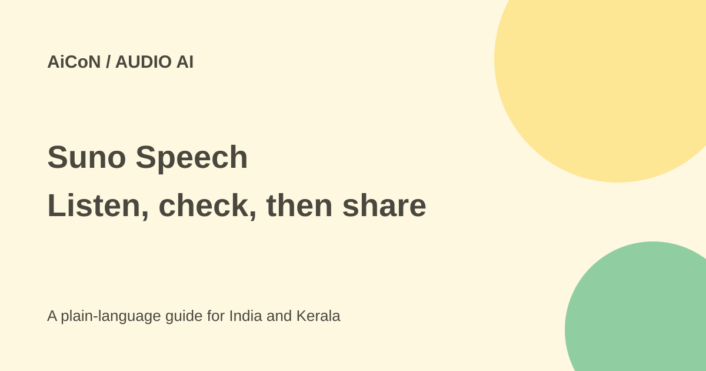

Suno Speech: narration and music, with beta limits
Suno Speech creates spoken audio and background music together from an idea or script. Suno opened the beta to its wider community on 1 October 2026. The launch does not establish a fixed credit cost or a guaranteed accent.

What does Speech make?
You type an idea, poem or written passage, then describe the voice and music style. The maker describes a single combined track, rather than separate narration and music tools. Its examples include stories, meditations and dramatic readings.
A beta announcement is not a test of the output. We did not create a track, compare voices or check Malayalam pronunciation. The result may need several corrections before it is usable.
What to expect from the beta
Suno explicitly warns that accents can drift and pauses can become very dramatic. That matters if you need a clear lesson, accessibility narration or a name pronounced correctly.
The original AiCoN post mentioned Simple and Advanced modes and roughly eight-minute tracks. The fetched launch page confirms prompt/script input and combined audio, but does not establish those exact mode names or duration limits. Check the current app rather than planning a long project around an unconfirmed limit.
How to try a short narration
- Open Suno through its official site or app and find Speech in the current account interface.
- Read the plan allowance, credit charge and terms before generating.
- Use a short original script with no private names or messages.
- Describe a general voice and music style without asking to impersonate a real person.
- Generate a short sample and listen from beginning to end.
- Check every word, accent, pause and the balance between voice and music.
- Revise the script or style before spending credits on a longer version.
- Confirm download options and usage rights before sharing or using it commercially.
Free or paid?
The launch says the beta is open to everyone, but does not state Speech-specific credit costs, plan allowances or commercial rights. Open beta is not the same as unlimited free audio. Check the actual account screen and current terms.
The general pricing page describes Free, Pro and Premier music plans, but the fetched comparison did not give an unambiguous Speech-specific credit charge or rights grant. Do not apply a music plan price to Speech without checking the actual feature screen. No fixed INR cost is confirmed in this guide. Repeated generations can use an allowance quickly. Set a small trial budget and keep a copy of your script outside the service.
For creators in Kerala
It may be useful for a short story or an original social-media narration. Do not rely on untested Malayalam output for a safety instruction or a school lesson. Listen for changed words, distorted names and music that makes speech hard to hear.
Do not upload a friend's private messages or a child's details without permission. A generated track can sound persuasive while saying something incorrect. Review facts as well as sound quality.
What changed since the original post?
We kept the confirmed combined voice-and-music capability and the maker's accent warning. Specific mode names, eight-minute duration and credit costs remain unconfirmed from the fetched launch page. No track was generated.
Frequently asked questions
Is it ordinary song generation?
The announcement describes spoken audio with original background music.
Will an accent stay consistent?
Not guaranteed. Suno warns that accents can drift in beta.
Is all beta use free?
The announcement does not establish a Speech-specific unlimited free allowance.
Sources: Official Speech beta launch · Current general pricing. Checked 7 October 2026.